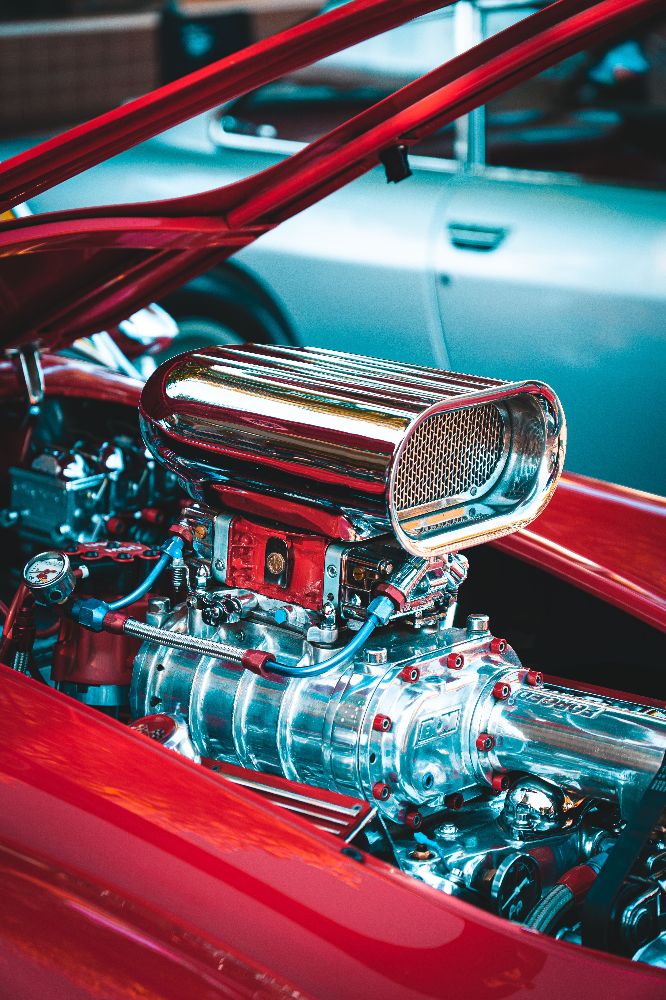
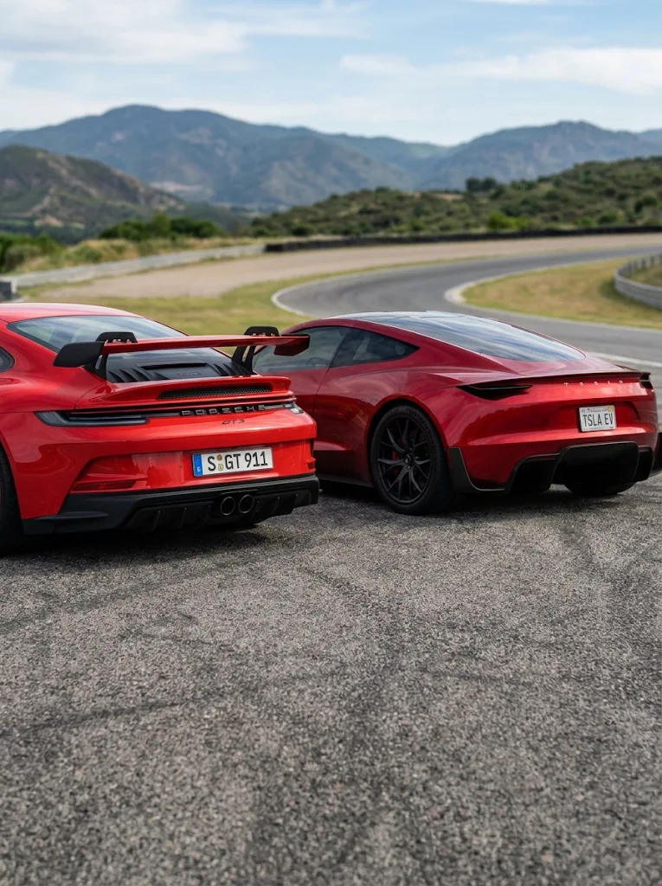
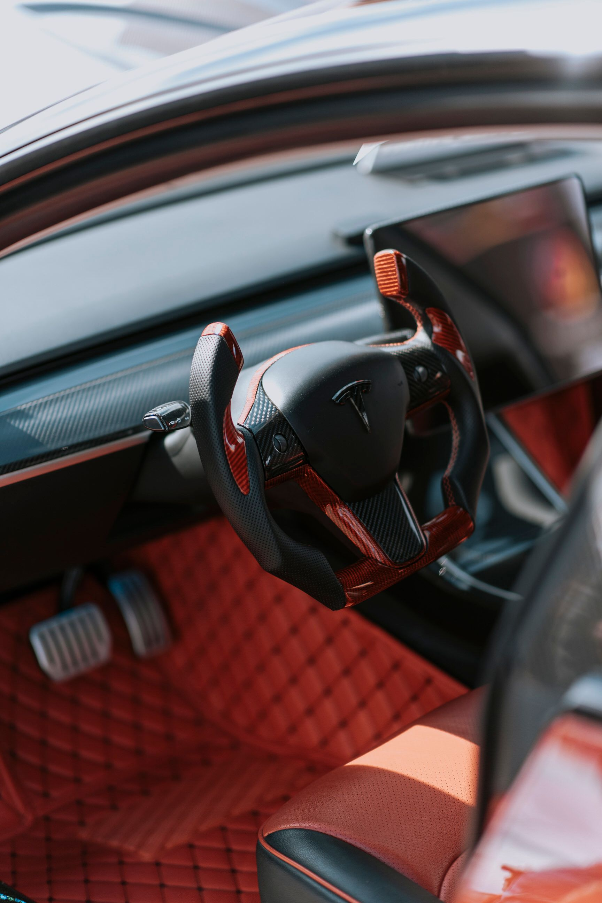

Qual é a melhor escolha para o futuro?
Os carros a combustão dominaram a indústria automotiva por mais de um século, oferecendo grande autonomia, roncos de motores potentes e uma vasta infraestrutura global de postos de combustível.
Por outro lado, os veículos elétricos representam a revolução tecnológica e sustentável. Eles prometem zero emissões de poluentes locais, menor custo de abastecimento e manutenção, além de um funcionamento silencioso.
A transição entre essas duas tecnologias levanta grandes debates sobre infraestrutura de carregamento, impacto ambiental na extração de lítio para as baterias e como será o verdadeiro futuro da nossa mobilidade.